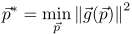
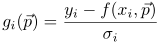

In addition to the N measurements (xi, yi) we can also use measurement errors σi to weight the measurements (the larger the error, the less the point influences the result). If no measurement errors are known, then we can use all σi=1.
Many data evaluation methods include fitting a model function f(x, p) to a set of measured data points (xi, yi). Here the model function is specified by a vector of parameters p, so the problem is to find that p which best describes the data best. Therefore we first have to define what best means, i.e. how to measure how far the model f(xi, p) is off from the correspondign measurement yi. Usually this is measured in terms of squared deviations and then called a least-squares fit problem:
In addition to the N measurements (xi, yi) we can also use measurement errors σi to weight the measurements (the larger the error, the less the point influences the result). If no measurement errors are known, then we can use all σi=1.
QuickFit also implements special plugins for fit functions that implement different varieties of f(xi, p).
As least squares problems appear in many data evaluation tasks, QuickFit incorporates them into its basic toolbox. They are realized as special plugins that solve a slightly broader problem than the one above:
Here the L2-Norm of the vector-valued function g(p) equals exactly the above written data fit expression, if we set the components i=1..N of g(p)to :

In your current QuickFit installation, these fit algorithms are available: $$list:fitalg:$$